Reacha — gaze-controlled assistive robotics

Assistive robotics for independence
- Eye Tracking
Control - Robotic
Assistance - Greater
Independence
Try the control workspace.
Use your mouse as a stand-in for gaze. Hold the pointer on a direction until it fills, then confirm. No robot is connected: this is a simulated 3D model of the station, with the SO-101 arm from the project repo.
Keyboard: Tab to a target and press Enter to select it instantly. Stop motion needs no confirmation and is always available. After a stop or tracking loss, nothing moves again until you re-arm deliberately.
Precision, without complexity.
Reacha translates intentional gaze into robotic arm commands. The interface keeps the camera feed in front, and keeps you in charge of each step.
Set up your gaze
Calibration is its own task. Align the front camera while seated in your normal position. Movement stays disabled until it is done.
Look to select
Hold your gaze on a large target. A progress bar previews the dwell without moving the robot. Dwell time is adjustable.
Review, then confirm
Selection and execution are separate. The command is shown in plain words, and stale commands expire.
One bounded step
The arm moves a small, fixed step in the workspace frame, with the live camera view always visible.
The user leads. The robot responds.
Choices and control remain with the person using the system.
Every state is clear.
Actions and system status are explicit, predictable and reversible where possible.
Detail that serves the task.
No decoration for its own sake. Large targets, plain labels, and icons paired with words.
Designed for interruption.
If tracking or the connection fails, it is shown immediately. Movement never resumes on its own.
- Inhibit commandsInvalidate any pending selection and reject new motion requests.
- Verify robot stateShow a stop acknowledgement only when the controller has sent one.
- Restore trackingCheck video, gaze and connection. Recalibrate if needed.
- Re-arm explicitlyReturn to the stationary state and require a new, deliberate action.
From gaze to motion, with safety in the loop.
Your selection is mapped to a command, checked by the command gateway under a safety supervisor, and only then executed by the robot controller. Video and robot state flow back to the interface.
Proposed logical architecture. Robot-side stopping and motion limits require independent engineering validation.
Interested in Reacha?
We are developing Reacha with users and robotics engineers. Tell us what everyday tasks matter to you.